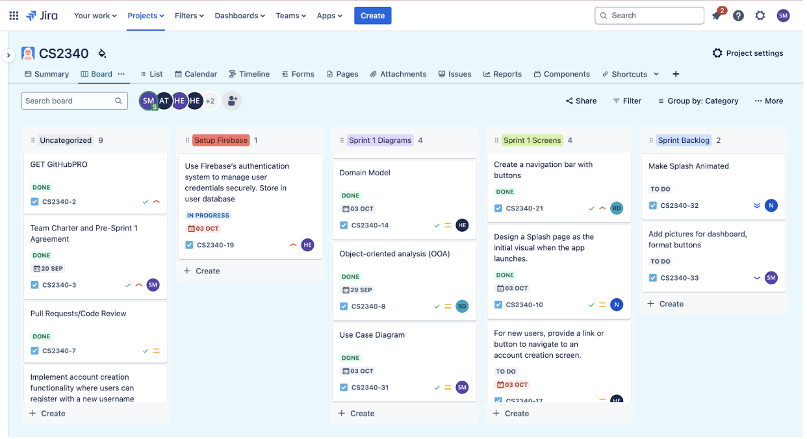

Sumayya focused on the design of the Use Case Diagram and the creation of both Sequence Diagrams. Heeba and Hala focused on the creation of Domain Models and Class Diagrams (DCD), which were the building blocks of our app. Aditi worked on the write-ups for SOLID and GRASP to ensure that our code followed best practices for object-oriented design. Nithyaa and Roshni implemented various design patterns integral to our maintaining clean and maintainable code.
Throughout the project, we faced numerous challenges. Some of the main challenges were the fact that
it was very difficult to be organized and participate in scrum calls regularly. Sometimes, because people
have different schedules and commitments. This sometimes made us a little slower in being able to tackle issues
and move forward as a team. However, the scrum calls we did come together for helped us update each other on the
tasks each one has done which made it easy to keep track of progress
Despite these challenges, the cooperative attitude in the team allowed us to push through obstacles and complete
the work on time for each sprint. We learned not only the technical skills of app development but also the essence of
team collaboration.
The concepts and design strategies learned through this project are many. One of the major lessons learned from this project
was to make diagrams such as use case diagrams, sequence diagrams, domain models, and class diagrams during the design of
the system. These visual tools provided the opportunity to communicate better about the structure and functionality of
the app before actually developing, thus saving time by reducing potential mistakes.
We also acquired practical experience with the connection to the database in learning to store and retrieve the data
necessary to give real-time updates in the app. The process reinforced our understanding of the integration of the backend
with the data in app development.
This project reinforced the importance of effective collaboration within a group, and how to adapt to unexpected challenges.
We were able to solve most issues by working with each other and deliver a complete app that achieved our project goals.
This website was built by Sumayya M.
In order to keep everything orderly, we agreed on the Jira app and used it for project management and kept track of our progress:
